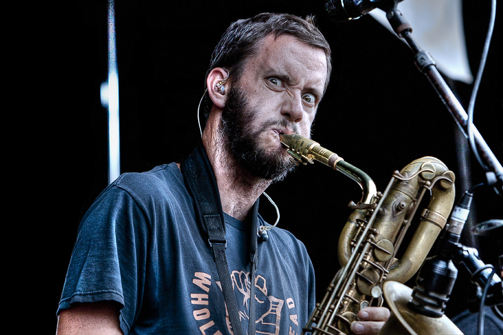
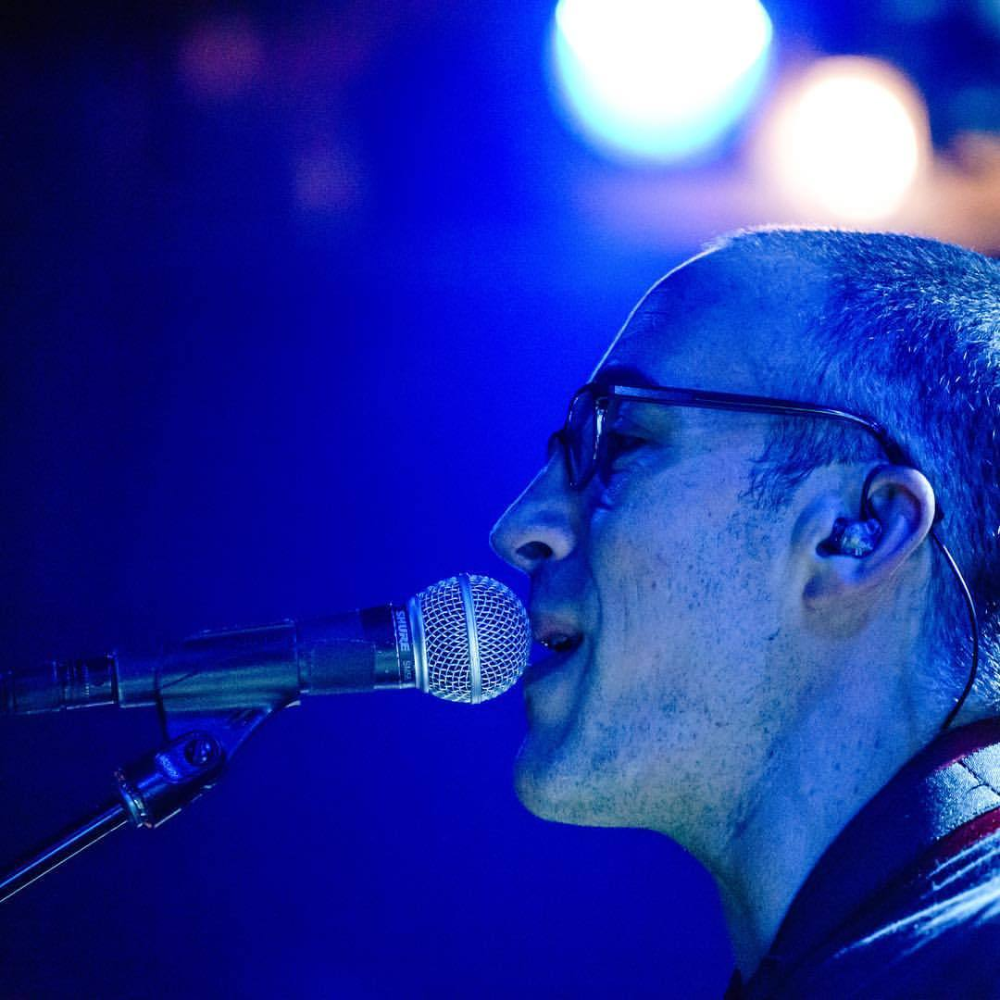

Biography
- Tomas Kalnoky – lead vocals, guitar
- Jim Conti – vocals, alto, tenor and baritone saxophone
- Chris Thatcher– drums

- Mike Brown – baritone and alto saxophone
- Pete McCullough – bass, backing vocals
- Matt Stewart – trumpet, backing vocals
- Karl Lyden - trombone, backing vocals

- Dan Ross - alto and tenor saxophone